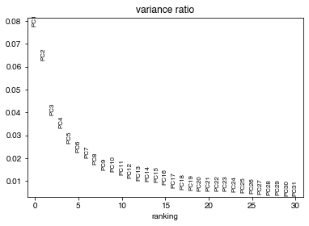
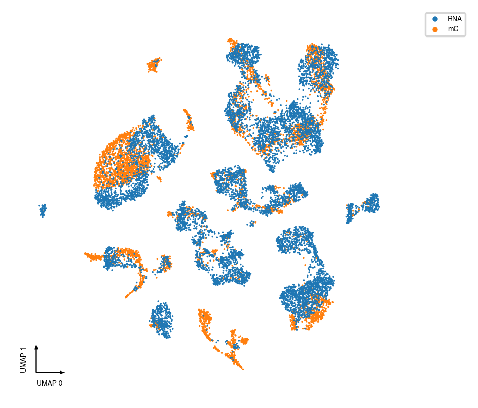
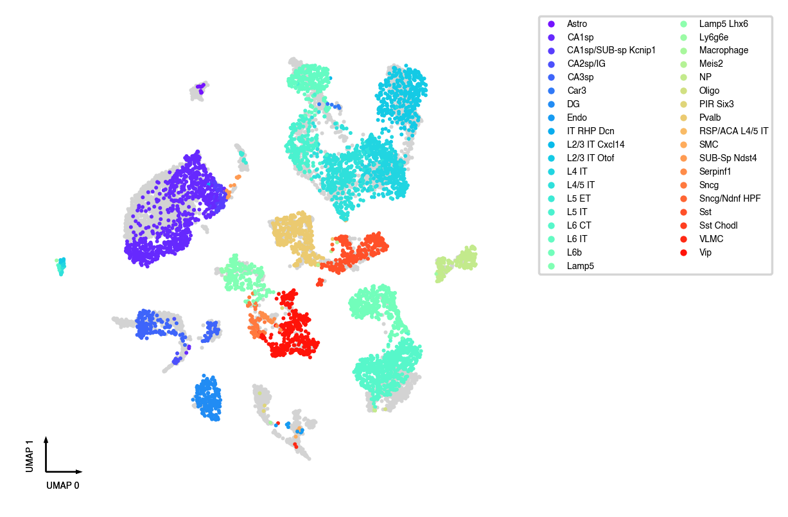

Integrating mC and RNA using Harmony¶
Import¶
import pandas as pd
import anndata
import scanpy as sc
import seaborn as sns
import matplotlib.pyplot as plt
from harmonypy import run_harmony
from ALLCools.mcds import MCDS
from ALLCools.clustering import significant_pc_test, tsne, log_scale, balanced_pca, calculate_direct_confusion
from ALLCools.plot import *
Parameter¶
cell_meta_path = '../step_by_step/100kb/L1.ClusteringResults.csv.gz'
mcds_path = '../dmg/gene_frac/*.mcds'
dmg_result_path = '../dmg/L1.OneVsRestDMG.hdf'
var_dim = 'gene'
mc_type = 'CHN' # for neurons, CHN capture cell-type-specific gene body diversity better
# PCA
p_cutoff = 0.1
n_neighbors = 25
resolution = 1
Load mC data¶
cell_meta = pd.read_csv(cell_meta_path, index_col=0)
mcds = MCDS.open(mcds_path)
mcds.add_cell_metadata(cell_meta) # add cell meta into mcds
mcds
<xarray.MCDS>
Dimensions: (cell: 5127, gene: 35664, mc_type: 2)
Coordinates: (12/26)
* mc_type (mc_type) object 'CGN' 'CHN'
* cell (cell) object '3C_M_1015' '3C_M_0' ... '9H_M_3057'
* gene (gene) object 'ENSMUSG00000102693.1' ... 'ENSMUS...
strand_type <U4 'both'
gene_chrom (gene) object dask.array<chunksize=(35664,), meta=np.ndarray>
gene_start (gene) int64 dask.array<chunksize=(35664,), meta=np.ndarray>
... ...
cell_tsne_1 (cell) float64 -23.56 -29.98 ... -8.787 49.84
cell_umap_0 (cell) float64 2.516 -2.627 3.549 ... 16.21 9.587
cell_umap_1 (cell) float64 13.24 16.95 10.3 ... 0.7527 -7.494
cell_L1 (cell) object 'c6' 'c1' 'c7' ... 'c4' 'c4' 'c14'
cell_L1_proba (cell) float64 0.4175 0.8896 ... 0.6577 0.9471
cell_CellTypeAnno.1 (cell) object 'IT-L4' 'IT-L23' ... 'CA1' 'IG-CA2'
Data variables:
gene_da_frac (cell, gene, mc_type) float32 dask.array<chunksize=(1202, 35664, 2), meta=np.ndarray>xarray.MCDS
- cell: 5127
- gene: 35664
- mc_type: 2
- mc_type(mc_type)object'CGN' 'CHN'
array(['CGN', 'CHN'], dtype=object)
- cell(cell)object'3C_M_1015' ... '9H_M_3057'
array(['3C_M_1015', '3C_M_0', '3C_M_1005', ..., '9H_M_3061', '9H_M_3055', '9H_M_3057'], dtype=object) - gene(gene)object'ENSMUSG00000102693.1' ... 'ENSM...
array(['ENSMUSG00000102693.1', 'ENSMUSG00000051951.5', 'ENSMUSG00000102348.1', ..., 'ENSMUSG00000100964.1', 'ENSMUSG00000095134.2', 'ENSMUSG00000096768.8'], dtype=object) - strand_type()<U4'both'
array('both', dtype='<U4') - gene_chrom(gene)objectdask.array<chunksize=(35664,), meta=np.ndarray>
Array Chunk Bytes 285.31 kB 285.31 kB Shape (35664,) (35664,) Count 15 Tasks 1 Chunks Type object numpy.ndarray - gene_start(gene)int64dask.array<chunksize=(35664,), meta=np.ndarray>
Array Chunk Bytes 285.31 kB 285.31 kB Shape (35664,) (35664,) Count 13 Tasks 1 Chunks Type int64 numpy.ndarray - gene_end(gene)int64dask.array<chunksize=(35664,), meta=np.ndarray>
Array Chunk Bytes 285.31 kB 285.31 kB Shape (35664,) (35664,) Count 13 Tasks 1 Chunks Type int64 numpy.ndarray - cell_mCCCFrac(cell)float640.00693 0.00738 ... 0.005626
array([0.00693 , 0.00738 , 0.00837 , ..., 0.00547393, 0.00518091, 0.00562574]) - cell_mCGFrac(cell)float640.7763 0.7595 ... 0.7229 0.7416
array([0.77634 , 0.75953 , 0.76114 , ..., 0.72624364, 0.722941 , 0.74156139]) - cell_mCHFrac(cell)float640.02493 0.02543 ... 0.01925 0.02198
array([0.02493 , 0.02543 , 0.03101 , ..., 0.02019587, 0.01925063, 0.0219762 ]) - cell_FinalmCReads(cell)float648.386e+05 1.196e+06 ... 1.614e+06
array([ 838606., 1195574., 1345810., ..., 1317149., 1533709., 1613710.])
- cell_CellInputReadPairs(cell)float642.126e+06 2.896e+06 ... 3.826e+06
array([2125596., 2896392., 3459190., ..., 3081254., 3558520., 3826440.])
- cell_MappingRate(cell)float640.6549 0.6258 ... 0.6567 0.6403
array([0.65490432, 0.62577338, 0.6590274 , ..., 0.65417943, 0.65672049, 0.64030822]) - cell_Plate(cell)object'CEMBA171206-3C-5' ... 'CEMBA190...
array(['CEMBA171206-3C-5', 'CEMBA171206-3C-1', 'CEMBA171206-3C-5', ..., 'CEMBA190219-9H-4', 'CEMBA190219-9H-3', 'CEMBA190219-9H-3'], dtype=object) - cell_Col384(cell)float646.0 18.0 3.0 ... 17.0 16.0 17.0
array([ 6., 18., 3., ..., 17., 16., 17.])
- cell_Row384(cell)float648.0 0.0 9.0 1.0 ... 15.0 15.0 15.0
array([ 8., 0., 9., ..., 15., 15., 15.])
- cell_CellTypeAnno(cell)object'IT-L4' 'IT-L23' ... 'CA1' 'IG-CA2'
array(['IT-L4', 'IT-L23', 'IT-L5', ..., 'CA1', 'CA1', 'IG-CA2'], dtype=object) - cell_leiden(cell)float644.0 9.0 6.0 6.0 ... 3.0 0.0 16.0
array([ 4., 9., 6., ..., 3., 0., 16.])
- cell_mCHFrac.1(cell)float640.02493 0.02543 ... 0.01925 0.02198
array([0.02493 , 0.02543 , 0.03101 , ..., 0.02019587, 0.01925063, 0.0219762 ]) - cell_tsne_0(cell)float6417.69 -2.191 29.97 ... -32.8 -5.074
array([ 17.6935273 , -2.19069967, 29.96507874, ..., -26.3672374 , -32.79688344, -5.07407545]) - cell_tsne_1(cell)float64-23.56 -29.98 ... -8.787 49.84
array([-23.56167534, -29.98443638, -24.34972535, ..., -5.54489801, -8.78671838, 49.83587988]) - cell_umap_0(cell)float642.516 -2.627 3.549 ... 16.21 9.587
array([ 2.5161426, -2.6268353, 3.5494308, ..., 14.880998 , 16.210026 , 9.586717 ]) - cell_umap_1(cell)float6413.24 16.95 10.3 ... 0.7527 -7.494
array([13.235757 , 16.946815 , 10.298643 , ..., 0.335069 , 0.75270814, -7.4935427 ]) - cell_L1(cell)object'c6' 'c1' 'c7' ... 'c4' 'c4' 'c14'
array(['c6', 'c1', 'c7', ..., 'c4', 'c4', 'c14'], dtype=object)
- cell_L1_proba(cell)float640.4175 0.8896 ... 0.6577 0.9471
array([0.41753333, 0.88963333, 0.7292 , ..., 0.4034 , 0.6577381 , 0.94706667]) - cell_CellTypeAnno.1(cell)object'IT-L4' 'IT-L23' ... 'CA1' 'IG-CA2'
array(['IT-L4', 'IT-L23', 'IT-L5', ..., 'CA1', 'CA1', 'IG-CA2'], dtype=object)
- gene_da_frac(cell, gene, mc_type)float32dask.array<chunksize=(1202, 35664, 2), meta=np.ndarray>
Array Chunk Bytes 1.46 GB 400.58 MB Shape (5127, 35664, 2) (1404, 35664, 2) Count 14 Tasks 4 Chunks Type float32 numpy.ndarray
mC data preprocess¶
dmg_result = pd.read_hdf(dmg_result_path)
use_genes = dmg_result.index.unique(
) # we use all the cluster DMGs as input features
mc_adata = mcds.sel({
var_dim: use_genes
}).get_adata(mc_type=mc_type, var_dim=var_dim, select_hvf=False)
# reverse the mC because mC fraction negatively correlated with RNA expression
mc_adata.X *= -1
# scale
sc.pp.scale(mc_adata)
mc_adata
AnnData object with n_obs × n_vars = 5127 × 4852
obs: 'mCCCFrac', 'mCGFrac', 'mCHFrac', 'FinalmCReads', 'CellInputReadPairs', 'MappingRate', 'Plate', 'Col384', 'Row384', 'CellTypeAnno', 'leiden', 'mCHFrac.1', 'tsne_0', 'tsne_1', 'umap_0', 'umap_1', 'L1', 'L1_proba', 'CellTypeAnno.1'
var: 'chrom', 'start', 'end', 'mean', 'std'
Load RNA data¶
The RNA data is already preprocessed in a separate notebook
rna_adata = anndata.read_h5ad('RNA.norm.log1p.HVG.scale.h5ad')
rna_adata
AnnData object with n_obs × n_vars = 8517 × 1999
obs: 'cluster_color', 'cluster_order', 'cluster_label', 'class_color', 'class_order', 'class_label', 'subclass_color', 'subclass_order', 'subclass_label', 'full_genotype_color', 'full_genotype_order', 'full_genotype_label', 'donor_sex_color', 'donor_sex_order', 'donor_sex_label', 'region_color', 'region_order', 'region_label', 'cortical_layer_color', 'cortical_layer_order', 'cortical_layer_label', 'cell_type_accession_color', 'cell_type_accession_order', 'cell_type_accession_label', 'cell_type_alias_color', 'cell_type_alias_order', 'cell_type_alias_label', 'cell_type_alt_alias_color', 'cell_type_alt_alias_order', 'cell_type_alt_alias_label', 'cell_type_designation_color', 'cell_type_designation_order', 'cell_type_designation_label', 'external_donor_name_color', 'external_donor_name_order', 'external_donor_name_label', 'facs_population_plan_color', 'facs_population_plan_order', 'facs_population_plan_label', 'injection_materials_color', 'injection_materials_order', 'injection_materials_label', 'injection_method_color', 'injection_method_order', 'injection_method_label', 'injection_roi_color', 'injection_roi_order', 'injection_roi_label', 'propagation_type_color', 'propagation_type_order', 'propagation_type_label', 'subregion_color', 'subregion_order', 'subregion_label', 'tsne_0', 'tsne_1', 'CellClass', 'MajorType', 'SubType', 'Region', 'n_genes'
var: 'gene_symble', 'gene_entrez_id', 'gene_id', 'chromosome', 'gene_name', 'n_cells', 'highly_variable', 'means', 'dispersions', 'dispersions_norm', 'mean', 'std'
uns: 'hvg'
Merge datasets¶
use_genes = rna_adata.var_names.intersection(mc_adata.var_names)
adata = mc_adata[:, use_genes].concatenate(rna_adata[:, use_genes],
index_unique=None)
adata.obs['batch'] = adata.obs['batch'].map({'0': 'mC', '1': 'RNA'})
adata
/home/hanliu/.local/lib/python3.8/site-packages/pandas/core/arrays/categorical.py:2487: FutureWarning: The `inplace` parameter in pandas.Categorical.remove_unused_categories is deprecated and will be removed in a future version.
res = method(*args, **kwargs)
AnnData object with n_obs × n_vars = 13644 × 930
obs: 'mCCCFrac', 'mCGFrac', 'mCHFrac', 'FinalmCReads', 'CellInputReadPairs', 'MappingRate', 'Plate', 'Col384', 'Row384', 'CellTypeAnno', 'leiden', 'mCHFrac.1', 'tsne_0', 'tsne_1', 'umap_0', 'umap_1', 'L1', 'L1_proba', 'CellTypeAnno.1', 'cluster_color', 'cluster_order', 'cluster_label', 'class_color', 'class_order', 'class_label', 'subclass_color', 'subclass_order', 'subclass_label', 'full_genotype_color', 'full_genotype_order', 'full_genotype_label', 'donor_sex_color', 'donor_sex_order', 'donor_sex_label', 'region_color', 'region_order', 'region_label', 'cortical_layer_color', 'cortical_layer_order', 'cortical_layer_label', 'cell_type_accession_color', 'cell_type_accession_order', 'cell_type_accession_label', 'cell_type_alias_color', 'cell_type_alias_order', 'cell_type_alias_label', 'cell_type_alt_alias_color', 'cell_type_alt_alias_order', 'cell_type_alt_alias_label', 'cell_type_designation_color', 'cell_type_designation_order', 'cell_type_designation_label', 'external_donor_name_color', 'external_donor_name_order', 'external_donor_name_label', 'facs_population_plan_color', 'facs_population_plan_order', 'facs_population_plan_label', 'injection_materials_color', 'injection_materials_order', 'injection_materials_label', 'injection_method_color', 'injection_method_order', 'injection_method_label', 'injection_roi_color', 'injection_roi_order', 'injection_roi_label', 'propagation_type_color', 'propagation_type_order', 'propagation_type_label', 'subregion_color', 'subregion_order', 'subregion_label', 'CellClass', 'MajorType', 'SubType', 'Region', 'n_genes', 'batch'
var: 'chrom-0', 'start-0', 'end-0', 'mean-0', 'std-0', 'mean-1', 'std-1', 'gene_symble-1', 'gene_entrez_id-1', 'gene_id-1', 'chromosome-1', 'gene_name-1', 'n_cells-1', 'highly_variable-1', 'means-1', 'dispersions-1', 'dispersions_norm-1'
PCA¶
sc.pp.pca(adata, n_comps=100)
sc.pl.pca_variance_ratio(adata)
n_components = significant_pc_test(adata, p_cutoff=p_cutoff)

36 components passed P cutoff of 0.1.
Changing adata.obsm['X_pca'] from shape (13644, 100) to (13644, 36)
Run Harmony on the PCs¶
ho = run_harmony(adata.obsm['X_pca'],
meta_data=adata.obs,
vars_use='batch',
random_state=0)
adata.obsm['X_pca'] = ho.Z_corr.T
2021-03-12 23:20:46,209 - harmonypy - INFO - Iteration 1 of 10
2021-03-12 23:20:50,108 - harmonypy - INFO - Iteration 2 of 10
2021-03-12 23:20:54,071 - harmonypy - INFO - Iteration 3 of 10
2021-03-12 23:20:58,533 - harmonypy - INFO - Iteration 4 of 10
2021-03-12 23:21:02,511 - harmonypy - INFO - Iteration 5 of 10
2021-03-12 23:21:06,454 - harmonypy - INFO - Iteration 6 of 10
2021-03-12 23:21:10,150 - harmonypy - INFO - Iteration 7 of 10
2021-03-12 23:21:14,015 - harmonypy - INFO - Converged after 7 iterations
Plot Integrated PCs¶
_ = plot_decomp_scatters(adata,
n_components=n_components,
hue='batch',
palette='tab10')
Red axis labels are used PCs
Run co-clustering¶
sc.pp.neighbors(adata, n_neighbors=n_neighbors)
sc.tl.leiden(adata, resolution=resolution)
Manifold Learning¶
def dump_embedding(adata, name, n_dim=2):
# put manifold coordinates into adata.obs
for i in range(n_dim):
adata.obs[f'{name}_{i}'] = adata.obsm[f'X_{name}'][:, i]
return
tSNE¶
tsne(
adata,
obsm='X_pca',
metric='euclidean',
exaggeration=-1, # auto determined
perplexity=30,
n_jobs=-1)
dump_embedding(adata, 'tsne')
UMAP¶
sc.tl.umap(adata)
dump_embedding(adata, 'umap')
Plot¶
fig, ax = plt.subplots(figsize=(4, 4), dpi=250)
_ = categorical_scatter(ax=ax,
data=adata.obs,
hue='batch',
show_legend=True,
max_points=None,
s=1)

coord_base = 'umap'
mc_anno = 'CellTypeAnno'
rna_anno = 'subclass_label'
fig, ax = plt.subplots(figsize=(4, 4), dpi=250)
categorical_scatter(ax=ax,
coord_base=coord_base,
data=adata.obs[adata.obs['batch'] == 'mC'],
scatter_kws=dict(color='lightgray', zorder=0),
s=3)
categorical_scatter(ax=ax,
data=adata.obs[adata.obs['batch'] == 'RNA'],
hue=rna_anno,
coord_base=coord_base,
show_legend=True,
s=3)
pass

coord_base = 'umap'
mc_anno = 'CellTypeAnno'
rna_anno = 'subclass_label'
fig, ax = plt.subplots(figsize=(4, 4), dpi=250)
categorical_scatter(ax=ax,
coord_base=coord_base,
data=adata.obs[adata.obs['batch'] == 'RNA'],
scatter_kws=dict(color='lightgray', zorder=0),
s=3)
adata.obs[mc_anno] = adata.obs[mc_anno].astype(str)
categorical_scatter(ax=ax,
data=adata.obs[adata.obs['batch'] == 'mC'],
hue=mc_anno,
coord_base=coord_base,
palette='tab20',
show_legend=True,
s=3)
pass

Confusion Matrix¶
mc_part = adata.obs.loc[adata.obs['batch'] == 'mC', [mc_anno, 'leiden']]
rna_part = adata.obs.loc[adata.obs['batch'] == 'RNA', [rna_anno, 'leiden']]
confusion_matrix = calculate_direct_confusion(mc_part, rna_part)
/home/hanliu/miniconda3/envs/allcools/lib/python3.8/site-packages/ALLCools/clustering/integration.py:40: FutureWarning: Index.__or__ operating as a set operation is deprecated, in the future this will be a logical operation matching Series.__or__. Use index.union(other) instead
union_index = left_row.index | right_row.index
sns.clustermap(confusion_matrix, metric='correlation', cmap='Reds')
<seaborn.matrix.ClusterGrid at 0x7f39b5ec82e0>